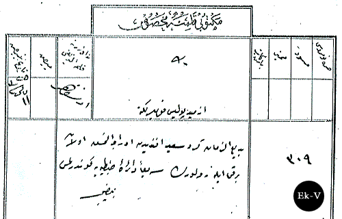
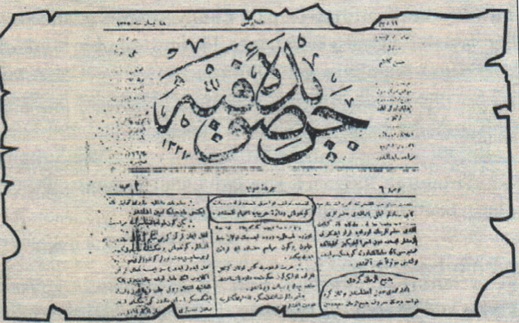

|
Bediüzzaman'ýn firar edip Ýzmit'e gelmesi |
  
|
|
Bediüzzaman'ýn firar edip Ýzmit'e gelmesi |
|
Bediüzzaman'ýn firar edip Ýzmit'e gelmesi
31 Mart ayaklanmasýný, bastýrmak için Selanikten gelen Hareket Ordusu, duruma hakim olup isyaný bastýrdýktan sonra Divan-ý Harb Mahkemelerini kurup cezalandýrmaya baþlamýþtý.
31 Mart'ýn o keþmekeþ ve hercümerc günlerinde; Bediüzzaman Ýzmit'e çekilmiþti. Yirmi Sekizinci Lem'ada bu bahis anlatýlýrken 1325 yani 1909 tarihi gösterilerek þunlar ifade edilmektedir:
"Ýþte o tarihte 31 Mart hâdisesi münasebetiyle Ýstanbul’dan kaçarak muvakkat bir zaman mücahede-i maneviyeyi býrakmak niyetiyle Hareket Ordusundan firar edip Ýzmit’e geldiði tarihe tevafuk ediyor." (Sikke-i Tasdik)
Bu hadiseyi Rýfat Yüce, "Kocaeli Tarih ve Rehberi" isimli kitabýnda anlatmakta: "Meþhur Said Nursî'nin meþrutiyetten evvel ve sonra Ýstanbul'da bulunarak çeþitli gazetelerde yüce mefkuresini anlatan yazýlar yazdýðýný ve 31 Mart'ýn o karýþýk günlerinde Ýzmit'e geldiðini yazmakta. Sonra merkez-i umumî ile temas edildikten sonra tekrar Ýstanbul'a döndüðünü ifade etmektedir. (Kaynak: Bilinmeyen taraflarýyla Bediüzzaman s.122)
Muhtemelen orada Hazret-i Ali Efendimizin "Bedi" manasýna gelen "Celcelutiye" ismindeki duasýný okurken "Karþýla! Kaçma!" hitabýna muhatap olunca tekrar Ýstanbul'a dönme kararý aldý. Remi makamlara teslim olunca üstadýn kama ve rovelverine el konulmuþ olmalý ki 24 Mayýs 1909 tarihinde Zaptiye Nezareti Ýzmit Polis Komiserliði'ne bir tezkire göndererek Bediüzzaman'ýn kama ve rovelverinin Zaptiye Nezareti'ne iade edilmesi istenir.
Bediüzzaman'ýn kama ve rovelverine el konulmasý

Mektubî Kalemine Mahsus:
Ýzmid Polis Komiserliði'ne,
Bediüzzaman Kürd Said Efendi'den oraca alýnmýþ olan bir kama ile rovelverin serian Daire-i Zabtiye'ye gönderilmesi.11 Mayýs 1325/24 Mayýs 1909.
BOA., ZB., nr.629/55
Bediüzzaman'ýn Ýstanbul'a döndüðünü yazan Ceride-i Sufiyye gazetesi

Bediüzzaman'ýn Ýzmit'ten Ýstanbul'a gönderildiðini yazan
2 Mayýs 1909 tarihli Sufi Gazetesi (Ceride-ý Sufiye)